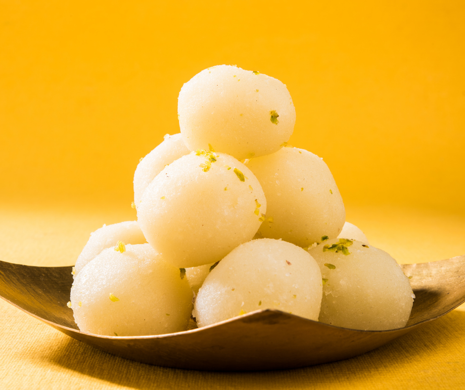
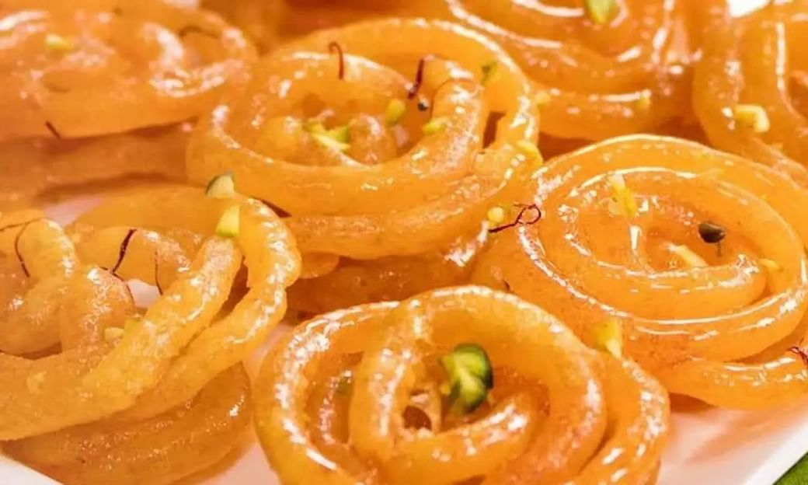
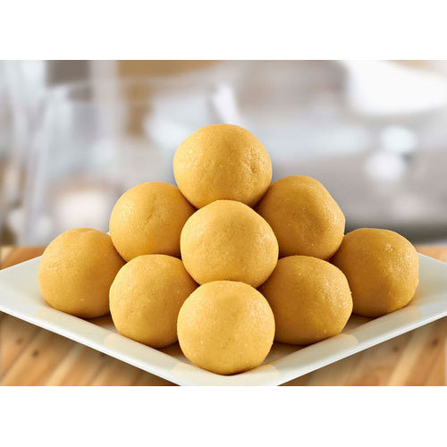
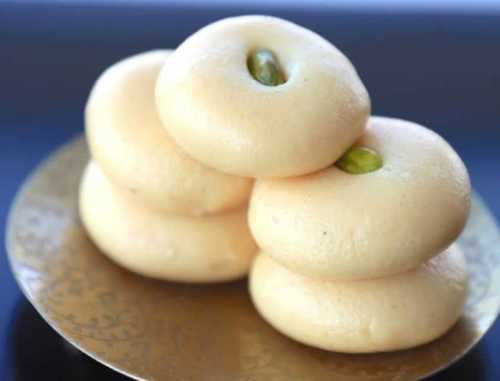

Indian Delight
A treasure of taste
Indian Cuisine is one of the most varied cuisine and a significant element of this cuisine is Indian sweets, also known as mithai. The Indian Cuisine is also known as Sweet cuisine around the world because almost half of
its dishes are either sweets or desserts. These different sweets holds different place in our diversified culture. Most of these mithais are made with milk and sugar, but every dish has it's own nutritional values, taste
and requires many different ingredients. The bases of these sweets varies among the regions but the one thing which is probably universal throughout thour vast country is the love for these colorful sweets.
Sweets are also significant in Indian culture. These are presented during festivals, ceremonies as it signifies good omen, prosperity and happiness. These sweets are also offen offered to gods and godesses.
Here, on Indian Delight, we provide you with the ingredients and the nutritional values of the most famous Indian Sweets like, Rasgulla, Jalebi, Besan Ladoo and Peda.
Our top dishes for you!
- 
Rasgulla - 
Jalebi - 
Ladoo - 
Peda